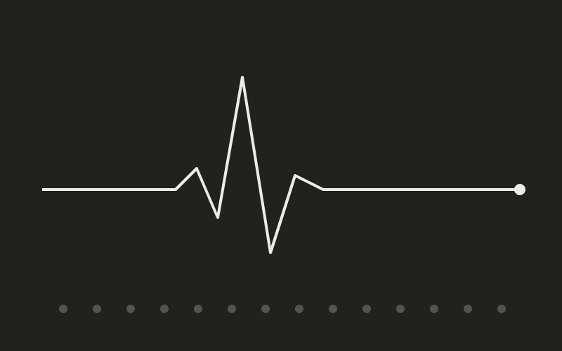

Building the Room

When I started the AI Innovation Society, I thought I was organizing a club. I was actually signing up for a second education, one that no course in machine learning was ever going to give me.
The idea was simple enough. I was learning AI, my friends were learning AI, and everyone was doing it alone, badly, from scattered YouTube playlists. It seemed obvious that we needed a room. A regular place where someone who had just figured something out could hand it to someone who had not. So I built the room.
The room is a system too
Here is what surprised me: running a community is an engineering problem wearing a social costume. A session that depends entirely on one person is a single point of failure. A community that only shows up when the topic is exciting has a retention problem. Momentum, like a training run, dies quietly the week you stop feeding it. I found myself designing the society the way I would design a pipeline, asking what breaks when I am not in the room, and fixing that first.
The Digital Health Summit was the stress test. Speakers, partners, schedules, a venue, and a hundred small things that could each quietly ruin the day. I have trained models that took days and failed at the last epoch, and honestly, the summit was harder. A model does not call you the night before to cancel. But when the day worked, it worked because of the team, not despite the chaos. That is the part I keep coming back to.
Teaching is compression
The selfish secret of community building is that explaining something forces you to actually understand it. Every session I prepared for the society made me sharper than a week of studying alone. You cannot hand-wave in front of a room. Someone will ask the question you were hoping nobody would ask, and now you owe them a real answer by next week.
One of my core values is that every session is someone else's shortcut. I got my own shortcuts from people who bothered to share. The society is just me paying that debt forward, at scale, with an events calendar.
If you are early in your career and deciding between grinding alone and building with others, my experience says the room compounds. The projects on my site exist because of skills I sharpened teaching them. Build the room. It builds you back.